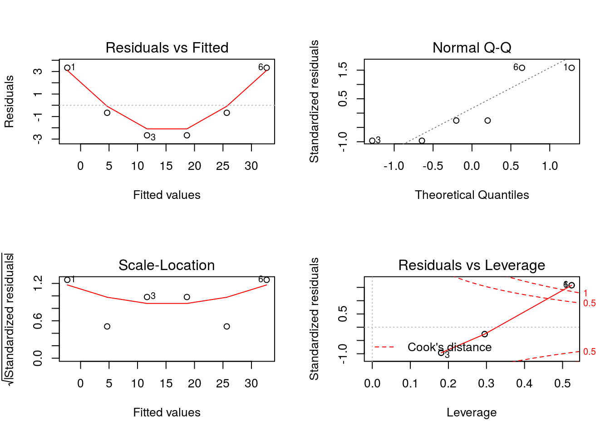

Chapter 1 Introduction to R
The goal of the first part of this book is to get you up to speed with the basics of R as quickly as possible.
1.1 Installation
Follow the procedures according to your operating system.
- Linux: You need to have
blasandgfortraninstalled on your Linux, for installing thecoinpackage. - Rgraphviz requires installation from
source("http://bioconductor.org/biocLite.R"), thenbiocLite("Rgraphviz"). - Uncomment the following lines for installing all missing packages (this will take some time):
# listofpackages <- c("bookdown", "ggplot2", "vioplot", "UsingR", "fpc", "reshape", "arules","arulesViz", "party", "C50", "utils", "rpart", "rpart.plot", "class", "klaR", "e1071", "popbio", "boot", "dplyr", "doParallel", "gbm", "DMwR", "pROC", "neuralnet", "igraph", "RMySQL", "caret", "randomForest", "tm", "wordcloud", "xts", "lubridate", "forecast")
# newpackages <- listofpackages[!(listofpackages %in% installed.packages()[,"Package"])]
# if(length(newpackages)>0) install.packages(newpackages,dependencies = TRUE)
#
# # install from archive
# if (!is.element("rgp", installed.packages()[,1]))
# { install.packages("https://cran.r-project.org/src/contrib/Archive/rgp/rgp_0.4-1.tar.gz",
# repos = NULL)
# }
## end of installing packages
# in Linux you may need to run several commands (in the terminal) and install additional libraries, e.g.
# sudo R CMD javareconf
# sudo apt-get install build-essential
# sudo apt-get install libxml2-dev
# sudo apt-get install libpq
# sudo apt-get install libpq-dev
# sudo apt-get install -y libmariadb-client-lgpl-dev
# sudo apt-get install texlive-xetex1.2 R and RStudio
- R is a programming language for statistical computing and data analysis that supports a variety of programming styles. See R in Wikipedia
- R has multiple online resources and books.
- R coding style
- R-Bloggers
- Getting help in R
- RStudio cheat sheet
- Base R cheat sheet
- Advanced R cheat sheet
- Data Visualization cheat sheet
- R Markdown cheatsheet
- [R Markdown Basics] (http://rmarkdown.rstudio.com/authoring_basics.html)
help(" ")command
- R as a calculator. Console: It uses the command-line interface.
Examples:
x <- c(1,2,3,4,5,6) # Create ordered collection (vector)
y <- x^2 # Square the elements of x
print(y) # print (vector) y## [1] 1 4 9 16 25 36mean(y) # Calculate average (arithmetic mean) of (vector) y; result is scalar## [1] 15.16667var(y) # Calculate sample variance## [1] 178.9667lm_1 <- lm(y ~ x) # Fit a linear regression model "y = f(x)" or "y = B0 + (B1 * x)"
# store the results as lm_1
print(lm_1) # Print the model from the (linear model object) lm_1##
## Call:
## lm(formula = y ~ x)
##
## Coefficients:
## (Intercept) x
## -9.333 7.000summary(lm_1) # Compute and print statistics for the fit##
## Call:
## lm(formula = y ~ x)
##
## Residuals:
## 1 2 3 4 5 6
## 3.3333 -0.6667 -2.6667 -2.6667 -0.6667 3.3333
##
## Coefficients:
## Estimate Std. Error t value Pr(>|t|)
## (Intercept) -9.3333 2.8441 -3.282 0.030453 *
## x 7.0000 0.7303 9.585 0.000662 ***
## ---
## Signif. codes: 0 '***' 0.001 '**' 0.01 '*' 0.05 '.' 0.1 ' ' 1
##
## Residual standard error: 3.055 on 4 degrees of freedom
## Multiple R-squared: 0.9583, Adjusted R-squared: 0.9478
## F-statistic: 91.88 on 1 and 4 DF, p-value: 0.000662 # of the (linear model object) lm_1
par(mfrow=c(2, 2)) # Request 2x2 plot layout
plot(lm_1) # Diagnostic plot of regression model
R script. # A file with R commands
# commentssource("filewithcommands.R")sink("recordmycommands.lis")savehistory()- From command line:
- Rscript
- Rscript file with
-e(e.g.Rscript -e 2+2)
- To exit R:
quit()
- Rscript
- Variables
- Operators
- assign operator
<-
- sequence operator, for example:
mynums <- 0:20 - arithmetic operators: + - = / ^ %/% (integer division) %% (modulus operator)
- assign operator
- The workspace. Objects.
ls()objects()ls.str()lists and describes the objects
rm(x)delete a variable. E.g.,rm(totalCost)s.str()objects()str()The structure function provides information about the variable
RStudio, RCommander and RKWard are the well-known IDEs for R (more later).
- Four # (‘####’) create an environment in RStudio. An environment binds a set of names to a set of values. You can think of an environment as a bag of names.

Working directories:
# set your working directory
# setwd("~/workingDir/")
getwd()## [1] "/home/drg/Projects/DASE"# record R commands:
# sink("recordmycommands.txt", append = TRUE)1.3 Basic Data Types
class( )- logical:
TRUE,FALSE - numeric, integer:
is.numeric( )is.integer( )
character
Examples:
TRUE## [1] TRUEclass(TRUE)## [1] "logical"FALSE## [1] FALSENA # missing## [1] NAclass(NA)## [1] "logical"T## [1] TRUEF## [1] FALSE# numeric data type
2## [1] 2class(2)## [1] "numeric"2.5## [1] 2.52L # integer## [1] 2class(2L)## [1] "integer"is.numeric(2)## [1] TRUEis.numeric(2L)## [1] TRUEis.integer(2)## [1] FALSEis.integer(2L)## [1] TRUE- data type coercion:
as.numeric( )as.character( )
as.integer( )
Examples:
truenum <- as.numeric(TRUE)
truenum## [1] 1class(truenum)## [1] "numeric"falsenum <- as.numeric(FALSE)
falsenum## [1] 0num2char <- as.character(55)
num2char## [1] "55"char2num <- as.numeric("55.3")
char2int <- as.integer("55.3")1.3.1 Mising values
NAstands for Not Available, which is not a number as well. It applies to missing values.NaNmeans ‘Not a Number’
Examples:
NA + 1## [1] NAmean(c(5,NA,7))## [1] NAmean(c(5,NA,7), na.rm=TRUE) # some functions allow to remove NAs## [1] 61.4 Vectors
Examples:
phases <- c("reqs", "dev", "test1", "test2", "maint")
str(phases)## chr [1:5] "reqs" "dev" "test1" "test2" "maint"is.vector(phases)## [1] TRUEthevalues <- c(15, 60, 30, 35, 22)
names(thevalues) <- phases
str(thevalues)## Named num [1:5] 15 60 30 35 22
## - attr(*, "names")= chr [1:5] "reqs" "dev" "test1" "test2" ...thevalues## reqs dev test1 test2 maint
## 15 60 30 35 22# a single value is a vector
aphase <- 44
is.vector(aphase)## [1] TRUEA single value is a vector! Example:
aphase <- 44
is.vector(aphase)## [1] TRUElength(aphase)## [1] 1length(thevalues)## [1] 51.4.1 Coercion for vectors
thevalues1 <- c(15, 60, "30", 35, 22)
class(thevalues1)## [1] "character"thevalues1## [1] "15" "60" "30" "35" "22"# <- is equivalent to assign ( )
assign("costs", c(50, 100, 30))1.4.2 Vector arithmetic
It is done in all elements. For example:
assign("costs", c(50, 100, 30))
costs/3## [1] 16.66667 33.33333 10.00000costs - 5## [1] 45 95 25costs <- costs - 5
incomes <- c(200, 800, 10)
earnings <- incomes - costs
sum(earnings)## [1] 845# R recycles values in vectors!Subsetting vectors
### Subsetting vectors []
phase1 <- phases[1]
phase1## [1] "reqs"phase3 <- phases[3]
phase3## [1] "test1"thevalues[phase1]## reqs
## 15thevalues["reqs"]## reqs
## 15testphases <- phases[c(3,4)]
thevalues[testphases]## test1 test2
## 30 35### Negative indexes
phases1 <- phases[-5]
phases## [1] "reqs" "dev" "test1" "test2" "maint"phases1## [1] "reqs" "dev" "test1" "test2"#phases2 <- phases[-testphases] ## error in argument
phases2 <- phases[-c(3,4)]
phases2## [1] "reqs" "dev" "maint"### subset using logical vector
phases3 <- phases[c(FALSE, TRUE, TRUE, FALSE)] #recicled first value
phases3## [1] "dev" "test1"selectionv <- c(FALSE, TRUE, TRUE, FALSE)
phases3 <- phases[selectionv]
phases3## [1] "dev" "test1"selectionvec2 <- c(TRUE, FALSE)
thevalues2 <- thevalues[selectionvec2]
thevalues2## reqs test1 maint
## 15 30 22### Generating regular sequenceswith : and seq
aseqofvalues <- 1:20
aseqofvalues2 <- seq(from=-3, to=3, by=0.5 )
aseqofvalues2## [1] -3.0 -2.5 -2.0 -1.5 -1.0 -0.5 0.0 0.5 1.0 1.5 2.0 2.5 3.0aseqofvalues3 <- seq(0, 100, by=10)
aseqofvalues4 <- aseqofvalues3[c(2, 4, 6, 8)]
aseqofvalues4## [1] 10 30 50 70aseqofvalues4 <- aseqofvalues3[-c(2, 4, 6, 8)]
aseqofvalues4## [1] 0 20 40 60 80 90 100aseqofvalues3[c(1,2)] <- c(666,888)
aseqofvalues3## [1] 666 888 20 30 40 50 60 70 80 90 100### Logical values in vectors TRUE/FALSE
aseqofvalues3 > 50## [1] TRUE TRUE FALSE FALSE FALSE FALSE TRUE TRUE TRUE TRUE TRUEaseqofvalues5 <- aseqofvalues3[aseqofvalues3 > 50]
aseqofvalues5## [1] 666 888 60 70 80 90 100aseqofvalues6 <- aseqofvalues3[!(aseqofvalues3 > 50)]
aseqofvalues6## [1] 20 30 40 50### Comparison functions
aseqofvalues7 <- aseqofvalues3[aseqofvalues3 == 50]
aseqofvalues7## [1] 50aseqofvalues8 <- aseqofvalues3[aseqofvalues3 == 22]
aseqofvalues8## numeric(0)aseqofvalues9 <- aseqofvalues3[aseqofvalues3 != 50]
aseqofvalues9## [1] 666 888 20 30 40 60 70 80 90 100logicalcond <- aseqofvalues3 >= 50
aseqofvalues10 <- aseqofvalues3[logicalcond]
aseqofvalues10## [1] 666 888 50 60 70 80 90 100### Remove Missing Values (NAs)
aseqofvalues3[c(1,2)] <- c(NA,NA)
aseqofvalues3## [1] NA NA 20 30 40 50 60 70 80 90 100aseqofvalues3 <- aseqofvalues3[!is.na(aseqofvalues3)]
aseqofvalues3## [1] 20 30 40 50 60 70 80 90 1001.5 Arrays and Matrices
mymat <- matrix(1:12, nrow =2)
mymat## [,1] [,2] [,3] [,4] [,5] [,6]
## [1,] 1 3 5 7 9 11
## [2,] 2 4 6 8 10 12mymat <- matrix(1:12, ncol =3)
mymat## [,1] [,2] [,3]
## [1,] 1 5 9
## [2,] 2 6 10
## [3,] 3 7 11
## [4,] 4 8 12mymat <- matrix(1:12, nrow=2, byrow = TRUE)
mymat## [,1] [,2] [,3] [,4] [,5] [,6]
## [1,] 1 2 3 4 5 6
## [2,] 7 8 9 10 11 12mymat <- matrix(1:12, nrow=3, ncol=4)
mymat## [,1] [,2] [,3] [,4]
## [1,] 1 4 7 10
## [2,] 2 5 8 11
## [3,] 3 6 9 12mymat <- matrix(1:12, nrow=3, ncol=4, byrow=TRUE)
mymat## [,1] [,2] [,3] [,4]
## [1,] 1 2 3 4
## [2,] 5 6 7 8
## [3,] 9 10 11 12### recycling
mymat <- matrix(1:5, nrow=3, ncol=4, byrow=TRUE)## Warning in matrix(1:5, nrow = 3, ncol = 4, byrow = TRUE): data length [5]
## is not a sub-multiple or multiple of the number of rows [3]mymat## [,1] [,2] [,3] [,4]
## [1,] 1 2 3 4
## [2,] 5 1 2 3
## [3,] 4 5 1 2### rbind cbind
cbind(1:3, 1:3)## [,1] [,2]
## [1,] 1 1
## [2,] 2 2
## [3,] 3 3rbind(1:3, 1:3)## [,1] [,2] [,3]
## [1,] 1 2 3
## [2,] 1 2 3mymat <- matrix(1)
mymat <- matrix(1:8, nrow=2, ncol=4, byrow=TRUE)
mymat## [,1] [,2] [,3] [,4]
## [1,] 1 2 3 4
## [2,] 5 6 7 8rbind(mymat, 9:12)## [,1] [,2] [,3] [,4]
## [1,] 1 2 3 4
## [2,] 5 6 7 8
## [3,] 9 10 11 12mymat <- cbind(mymat, c(5,9))
mymat## [,1] [,2] [,3] [,4] [,5]
## [1,] 1 2 3 4 5
## [2,] 5 6 7 8 9mymat <- matrix(1:8, byrow = TRUE, nrow=2)
mymat## [,1] [,2] [,3] [,4]
## [1,] 1 2 3 4
## [2,] 5 6 7 8rownames(mymat) <- c("row1", "row2")
mymat## [,1] [,2] [,3] [,4]
## row1 1 2 3 4
## row2 5 6 7 8colnames(mymat) <- c("col1", "col2", "col3", "col4")
mymat## col1 col2 col3 col4
## row1 1 2 3 4
## row2 5 6 7 8mymat2 <- matrix(1:12, byrow=TRUE, nrow=3, dimnames=list(c("row1", "row2", "row3"),
c("col1", "col2", "col3", "col4")))
mymat2## col1 col2 col3 col4
## row1 1 2 3 4
## row2 5 6 7 8
## row3 9 10 11 12### Coercion in Arrays
matnum <- matrix(1:8, ncol = 2)
matnum## [,1] [,2]
## [1,] 1 5
## [2,] 2 6
## [3,] 3 7
## [4,] 4 8matchar <- matrix(LETTERS[1:6], nrow = 4, ncol = 3)
matchar## [,1] [,2] [,3]
## [1,] "A" "E" "C"
## [2,] "B" "F" "D"
## [3,] "C" "A" "E"
## [4,] "D" "B" "F"matchars <- cbind(matnum, matchar)
matchars## [,1] [,2] [,3] [,4] [,5]
## [1,] "1" "5" "A" "E" "C"
## [2,] "2" "6" "B" "F" "D"
## [3,] "3" "7" "C" "A" "E"
## [4,] "4" "8" "D" "B" "F"### Subsetting
mymat3 <- matrix(sample(-8:15, 12), nrow=3)
mymat3## [,1] [,2] [,3] [,4]
## [1,] 12 11 7 8
## [2,] -1 13 3 -3
## [3,] 2 1 4 6mymat3[2,3]## [1] 3mymat3[1,4]## [1] 8mymat3[3,]## [1] 2 1 4 6mymat3[,4]## [1] 8 -3 6mymat3[5] # counts elements by column## [1] 13mymat3[9]## [1] 4## Subsetting multiple elements
mymat3[2, c(1,3)]## [1] -1 3mymat3[c(2,3), c(1,3,4)]## [,1] [,2] [,3]
## [1,] -1 3 -3
## [2,] 2 4 6rownames(mymat3) <- c("r1", "r2", "r3")
colnames(mymat3) <- c("c1", "c2", "c3", "c4")
mymat3["r2", c("c1", "c3")]## c1 c3
## -1 3### Subset by logical vector
mymat3[c(FALSE, TRUE, FALSE),
c(TRUE, FALSE, TRUE, FALSE)]## c1 c3
## -1 3mymat3[c(FALSE, TRUE, TRUE),
c(TRUE, FALSE, TRUE, TRUE)]## c1 c3 c4
## r2 -1 3 -3
## r3 2 4 6### matrix arithmetic
row1 <- c(220, 137)
row2 <- c(345, 987)
row3 <- c(111, 777)
mymat4 <- rbind(row1, row2, row3)
rownames(mymat4) <- c("row_1", "row_2", "row_3")
colnames(mymat4) <- c("col_1", "col_2")
mymat4## col_1 col_2
## row_1 220 137
## row_2 345 987
## row_3 111 777mymat4/10## col_1 col_2
## row_1 22.0 13.7
## row_2 34.5 98.7
## row_3 11.1 77.7mymat4 -100## col_1 col_2
## row_1 120 37
## row_2 245 887
## row_3 11 677mymat5 <- rbind(c(50,50), c(10,10), c(100,100))
mymat5## [,1] [,2]
## [1,] 50 50
## [2,] 10 10
## [3,] 100 100mymat4 - mymat5## col_1 col_2
## row_1 170 87
## row_2 335 977
## row_3 11 677mymat4 * (mymat5/100)## col_1 col_2
## row_1 110.0 68.5
## row_2 34.5 98.7
## row_3 111.0 777.0### index matrices
m1 <- array(1:20, dim=c(4,5))
m1## [,1] [,2] [,3] [,4] [,5]
## [1,] 1 5 9 13 17
## [2,] 2 6 10 14 18
## [3,] 3 7 11 15 19
## [4,] 4 8 12 16 20index <- array(c(1:3, 3:1), dim=c(3,2))
index## [,1] [,2]
## [1,] 1 3
## [2,] 2 2
## [3,] 3 1m1[index] <-0
m1## [,1] [,2] [,3] [,4] [,5]
## [1,] 1 5 0 13 17
## [2,] 2 0 10 14 18
## [3,] 0 7 11 15 19
## [4,] 4 8 12 16 201.6 Factors
- Factors in R are stored as a vector of integer values with a corresponding set of character values to use when the factor is displayed.
personnel <- c("Analyst1", "ManagerL2", "Analyst1", "Analyst2", "Boss", "ManagerL1", "ManagerL2", "Programmer1", "Programmer2", "Programmer3", "Designer1","Designer2", "OtherStaff") # staff in a company
personnel_factors <- factor(personnel)
personnel_factors #sorted alphabetically## [1] Analyst1 ManagerL2 Analyst1 Analyst2 Boss
## [6] ManagerL1 ManagerL2 Programmer1 Programmer2 Programmer3
## [11] Designer1 Designer2 OtherStaff
## 11 Levels: Analyst1 Analyst2 Boss Designer1 Designer2 ... Programmer3str(personnel_factors)## Factor w/ 11 levels "Analyst1","Analyst2",..: 1 7 1 2 3 6 7 9 10 11 ...personnel2 <- factor(personnel,
levels = c("Boss", "ManagerL1", "ManagerL2", "Analyst1", "Analyst2", "Designer1","Designer2", "Programmer1", "Programmer2", "Programmer3", "OtherStaff")) #do not duplicate the same factors
personnel2## [1] Analyst1 ManagerL2 Analyst1 Analyst2 Boss
## [6] ManagerL1 ManagerL2 Programmer1 Programmer2 Programmer3
## [11] Designer1 Designer2 OtherStaff
## 11 Levels: Boss ManagerL1 ManagerL2 Analyst1 Analyst2 ... OtherStaffstr(personnel2)## Factor w/ 11 levels "Boss","ManagerL1",..: 4 3 4 5 1 2 3 8 9 10 ...# a factor's levels will always be character values.
levels(personnel2) <- c("B", "M1", "M2", "A1", "A2", "D1", "D2", "P1", "P2", "P3", "OS")
personnel2## [1] A1 M2 A1 A2 B M1 M2 P1 P2 P3 D1 D2 OS
## Levels: B M1 M2 A1 A2 D1 D2 P1 P2 P3 OSpersonnel3 <- factor(personnel,
levels = c("Boss", "ManagerL1", "ManagerL2", "Analyst1", "Analyst2", "Designer1","Designer2", "Programmer1", "Programmer2", "Programmer3", "OtherStaff"),
c("B", "M1", "M2", "A1", "A2", "D1", "D2", "P1", "P2", "P3", "OS"))
personnel3## [1] A1 M2 A1 A2 B M1 M2 P1 P2 P3 D1 D2 OS
## Levels: B M1 M2 A1 A2 D1 D2 P1 P2 P3 OS### Nominal versus ordinal, ordered factors
personnel3[1] < personnel3[2] # error, factors not ordered## Warning in Ops.factor(personnel3[1], personnel3[2]): '<' not meaningful for
## factors## [1] NAtshirts <- c("M", "L", "S", "S", "L", "M", "L", "M")
tshirt_factor <- factor(tshirts, ordered = TRUE,
levels = c("S", "M", "L"))
tshirt_factor## [1] M L S S L M L M
## Levels: S < M < Ltshirt_factor[1] < tshirt_factor[2]## [1] TRUE1.7 Lists
- ‘[’ returns a list
- ‘[[’ returns the list element
- ‘$’ returns the content of that element in the list
c("R good times", 190, 5)## [1] "R good times" "190" "5"song <- list("R good times", 190, 5)
is.list(song)## [1] TRUEstr(song)## List of 3
## $ : chr "R good times"
## $ : num 190
## $ : num 5names(song) <- c("title", "duration", "track")
song## $title
## [1] "R good times"
##
## $duration
## [1] 190
##
## $track
## [1] 5song$title## [1] "R good times"song2 <- list(title="Good Friends",
duration = 125,
track = 2,
rank = 6)
song3 <- list(title="Many Friends",
duration = 125,
track= 2,
rank = 1,
similar2 = song2)
song[1]## $title
## [1] "R good times"song$title## [1] "R good times"str(song[1])## List of 1
## $ title: chr "R good times"song[[1]]## [1] "R good times"str(song[[1]])## chr "R good times"song2[3]## $track
## [1] 2song3[5] # a list## $similar2
## $similar2$title
## [1] "Good Friends"
##
## $similar2$duration
## [1] 125
##
## $similar2$track
## [1] 2
##
## $similar2$rank
## [1] 6str(song3[5])## List of 1
## $ similar2:List of 4
## ..$ title : chr "Good Friends"
## ..$ duration: num 125
## ..$ track : num 2
## ..$ rank : num 6song3[[5]]## $title
## [1] "Good Friends"
##
## $duration
## [1] 125
##
## $track
## [1] 2
##
## $rank
## [1] 6song3$similar2## $title
## [1] "Good Friends"
##
## $duration
## [1] 125
##
## $track
## [1] 2
##
## $rank
## [1] 6song[c(1,3)]## $title
## [1] "R good times"
##
## $track
## [1] 5str(song[c(1,3)])## List of 2
## $ title: chr "R good times"
## $ track: num 5result <- song[c(1,3)]
result[1]## $title
## [1] "R good times"result[[1]]## [1] "R good times"str(result)## List of 2
## $ title: chr "R good times"
## $ track: num 5result$title## [1] "R good times"result$track## [1] 5# access with [[ to content
song3[[5]][[1]]## [1] "Good Friends"song3$similar2[[1]]## [1] "Good Friends"# Subsets
### subset by names
song[c("title", "track")]## $title
## [1] "R good times"
##
## $track
## [1] 5song3["similar2"]## $similar2
## $similar2$title
## [1] "Good Friends"
##
## $similar2$duration
## [1] 125
##
## $similar2$track
## [1] 2
##
## $similar2$rank
## [1] 6resultsimilar <- song3["similar2"]
str(resultsimilar)## List of 1
## $ similar2:List of 4
## ..$ title : chr "Good Friends"
## ..$ duration: num 125
## ..$ track : num 2
## ..$ rank : num 6resultsimilar1 <-song3[["similar2"]]
str(resultsimilar1)## List of 4
## $ title : chr "Good Friends"
## $ duration: num 125
## $ track : num 2
## $ rank : num 6resultsimilar1$title## [1] "Good Friends"# subset by logicals
song[c(TRUE, FALSE, TRUE, FALSE)]## $title
## [1] "R good times"
##
## $track
## [1] 5result3 <- song[c(TRUE, FALSE, TRUE, FALSE)] # is a list of two elements
# extending the list
shared <- c("Hillary", "Javi", "Mikel", "Patty")
song3$shared <- shared
str(song3)## List of 6
## $ title : chr "Many Friends"
## $ duration: num 125
## $ track : num 2
## $ rank : num 1
## $ similar2:List of 4
## ..$ title : chr "Good Friends"
## ..$ duration: num 125
## ..$ track : num 2
## ..$ rank : num 6
## $ shared : chr [1:4] "Hillary" "Javi" "Mikel" "Patty"cities <- list("Bilbao", "New York", "Tartu")
song3[["cities"]] <- cities
str(song3)## List of 7
## $ title : chr "Many Friends"
## $ duration: num 125
## $ track : num 2
## $ rank : num 1
## $ similar2:List of 4
## ..$ title : chr "Good Friends"
## ..$ duration: num 125
## ..$ track : num 2
## ..$ rank : num 6
## $ shared : chr [1:4] "Hillary" "Javi" "Mikel" "Patty"
## $ cities :List of 3
## ..$ : chr "Bilbao"
## ..$ : chr "New York"
## ..$ : chr "Tartu"1.8 Data frames
thenames <- c("Ane", "Mike", "Xabi", "Viktoria", "Edurne")
ages <- c(44, 20, 33, 15, 65)
employee <- c(FALSE, FALSE, TRUE, TRUE, FALSE)
mydataframe <- data.frame(thenames, ages, employee)
mydataframe## thenames ages employee
## 1 Ane 44 FALSE
## 2 Mike 20 FALSE
## 3 Xabi 33 TRUE
## 4 Viktoria 15 TRUE
## 5 Edurne 65 FALSEnames(mydataframe) <- c("FirstName", "Age", "Employee")
str(mydataframe)## 'data.frame': 5 obs. of 3 variables:
## $ FirstName: Factor w/ 5 levels "Ane","Edurne",..: 1 3 5 4 2
## $ Age : num 44 20 33 15 65
## $ Employee : logi FALSE FALSE TRUE TRUE FALSE#strings are not factors!
mydataframe <- data.frame(thenames, ages, employee,
stringsAsFactors=FALSE)
names(mydataframe) <- c("FirstName", "Age", "Employee")
str(mydataframe)## 'data.frame': 5 obs. of 3 variables:
## $ FirstName: chr "Ane" "Mike" "Xabi" "Viktoria" ...
## $ Age : num 44 20 33 15 65
## $ Employee : logi FALSE FALSE TRUE TRUE FALSE# subset data frame
mydataframe[4,2]## [1] 15mydataframe[4, "Age"]## [1] 15mydataframe[, "FirstName"]## [1] "Ane" "Mike" "Xabi" "Viktoria" "Edurne"mydataframe[c(2,5), c("Age", "Employee")]## Age Employee
## 2 20 FALSE
## 5 65 FALSEmatfromframe <- as.matrix(mydataframe[c(2,5), c("Age", "Employee")])
str(matfromframe)## num [1:2, 1:2] 20 65 0 0
## - attr(*, "dimnames")=List of 2
## ..$ : chr [1:2] "2" "5"
## ..$ : chr [1:2] "Age" "Employee"mydataframe[3]## Employee
## 1 FALSE
## 2 FALSE
## 3 TRUE
## 4 TRUE
## 5 FALSE# convert to vector
mydf0 <- mydataframe[3] #data.frame
str(mydf0)## 'data.frame': 5 obs. of 1 variable:
## $ Employee: logi FALSE FALSE TRUE TRUE FALSEmyvec <- mydataframe[[3]] #vector
str(myvec)## logi [1:5] FALSE FALSE TRUE TRUE FALSEmydf0asvec <- as.vector(mydataframe[3]) # but it doesn't work . Use [[]]
str(mydf0asvec)## 'data.frame': 5 obs. of 1 variable:
## $ Employee: logi FALSE FALSE TRUE TRUE FALSEmydf0asvec <- as.vector(mydataframe[[3]])
str(mydf0asvec)## logi [1:5] FALSE FALSE TRUE TRUE FALSE# add column
height <- c(166, 165, 158, 176, 199)
weight <- c(66, 77, 99, 88, 109)
mydataframe$height <- height
mydataframe[["weight"]] <- weight
mydataframe## FirstName Age Employee height weight
## 1 Ane 44 FALSE 166 66
## 2 Mike 20 FALSE 165 77
## 3 Xabi 33 TRUE 158 99
## 4 Viktoria 15 TRUE 176 88
## 5 Edurne 65 FALSE 199 109# add a column
birthplace <- c("Tallinn", "London", "Donostia", "Paris", "New York")
mydataframe <- cbind(mydataframe, birthplace)
mydataframe## FirstName Age Employee height weight birthplace
## 1 Ane 44 FALSE 166 66 Tallinn
## 2 Mike 20 FALSE 165 77 London
## 3 Xabi 33 TRUE 158 99 Donostia
## 4 Viktoria 15 TRUE 176 88 Paris
## 5 Edurne 65 FALSE 199 109 New York# add a row
anton <- data.frame(FirstName = "Anton", Age = 77, Employee=TRUE, height= 170, weight = 65, birthplace ="Amsterdam", stringsAsFactors=FALSE)
mydataframe <- rbind (mydataframe, anton)
mydataframe## FirstName Age Employee height weight birthplace
## 1 Ane 44 FALSE 166 66 Tallinn
## 2 Mike 20 FALSE 165 77 London
## 3 Xabi 33 TRUE 158 99 Donostia
## 4 Viktoria 15 TRUE 176 88 Paris
## 5 Edurne 65 FALSE 199 109 New York
## 6 Anton 77 TRUE 170 65 Amsterdam# sorting
mydataframeSorted <- mydataframe[order(mydataframe$Age, decreasing = TRUE), ] #all columns
mydataframeSorted## FirstName Age Employee height weight birthplace
## 6 Anton 77 TRUE 170 65 Amsterdam
## 5 Edurne 65 FALSE 199 109 New York
## 1 Ane 44 FALSE 166 66 Tallinn
## 3 Xabi 33 TRUE 158 99 Donostia
## 2 Mike 20 FALSE 165 77 London
## 4 Viktoria 15 TRUE 176 88 ParismydataframeSorted2 <- mydataframe[order(mydataframe$Age, decreasing = TRUE), c(1,2,6) ]
mydataframeSorted2## FirstName Age birthplace
## 6 Anton 77 Amsterdam
## 5 Edurne 65 New York
## 1 Ane 44 Tallinn
## 3 Xabi 33 Donostia
## 2 Mike 20 London
## 4 Viktoria 15 Paris1.9 Reading Data
library(foreign)
isbsg <- read.arff("datasets/effortEstimation/isbsg10teaser.arff")
mydataISBSG <- isbsg[, c("FS", "N_effort")]
str(mydataISBSG)## 'data.frame': 37 obs. of 2 variables:
## $ FS : num 225 599 333 748 158 427 461 257 115 116 ...
## $ N_effort: num 1856 10960 5661 1518 3670 ...1.10 Plots
There are several graphic packages that are recommended, in particular ggplot. However, there is some basic support in the R base for graphics. The following Figure 1.1 shows a simple plot.
plot(mydataISBSG$FS, mydataISBSG$N_effort)
Figure 1.1: Simple plot
1.11 Flow of Control
Ifelse:
library(foreign)
kc1 <- read.arff("datasets/defectPred/D1/KC1.arff")
kc1$Defective <- ifelse(kc1$Defective == "Y", 1, 0)
head(kc1, 1)## LOC_BLANK BRANCH_COUNT LOC_CODE_AND_COMMENT LOC_COMMENTS
## 1 0 1 0 0
## CYCLOMATIC_COMPLEXITY DESIGN_COMPLEXITY ESSENTIAL_COMPLEXITY
## 1 1 1 1
## LOC_EXECUTABLE HALSTEAD_CONTENT HALSTEAD_DIFFICULTY HALSTEAD_EFFORT
## 1 3 11.58 2.67 82.35
## HALSTEAD_ERROR_EST HALSTEAD_LENGTH HALSTEAD_LEVEL HALSTEAD_PROG_TIME
## 1 0.01 11 0.38 4.57
## HALSTEAD_VOLUME NUM_OPERANDS NUM_OPERATORS NUM_UNIQUE_OPERANDS
## 1 30.88 4 7 3
## NUM_UNIQUE_OPERATORS LOC_TOTAL Defective
## 1 4 5 01.12 Rattle
There is graphical interface, Rattle, that allow us to perform some data mining tasks with R (Williams 2011).

Rattle: GUI for Data mining with R
We will provide an overview of data analsyis using different techniques.
References
Williams, Graham J. 2011. Data Mining with Rattle and R: The Art of Excavating Data for Knowledge Discovery. Use R! Springer. http://www.springer.com/gp/book/9781441998897.